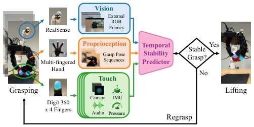
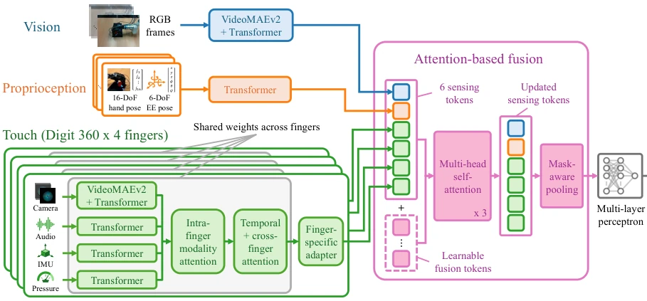
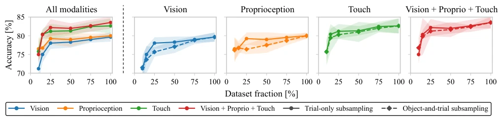
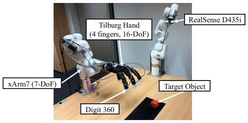
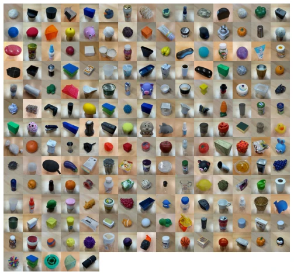
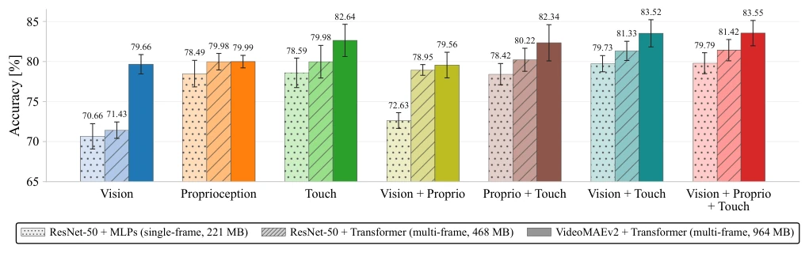
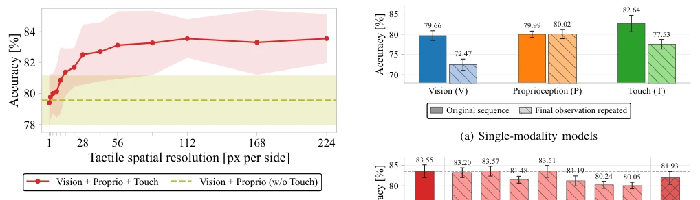
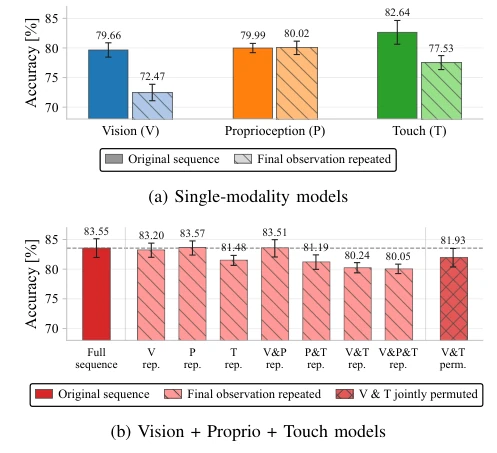
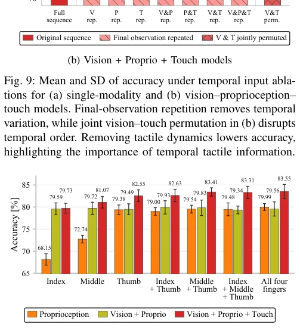
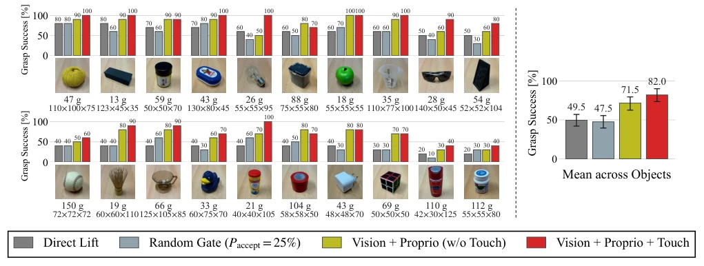

This paper provides a lesson for robots that "cannot grasp relying solely on vision." The authors avoided flashy end-to-end strategies, instead implementing a "stability predictor" akin to an experienced quality inspector, evaluating the grasp before deciding to lift. The 10,000 real data points are indeed robust, far superior to pure simulation data. However, the definition of "stability" is somewhat simplistic and blunt, merely "lifting without dropping," without investigating force control details in depth. Furthermore, while the Digit 360 sensors are advanced, they depend on specific hardware, casting doubt on generalizability. The conclusion claims touch improves performance by 10.5%, which sounds impressive, but a closer look reveals the non-tactile baseline is also decent (79%), suggesting vision and proprioception are already quite effective, with touch serving more as an enhancement. Overall, this is a solid engineering implementation, but one should not expect it to directly solve all dexterous manipulation challenges.
Stability in multi-finger dexterous hand grasping cannot rely solely on visual placement; it is an interaction problem. Existing research focuses primarily on visual grasping of parallel grippers [3], [4], or simple tactile threshold control [12], [13]. Although visuo-tactile learning has demonstrated that tactile input can improve prediction [5], [6], in multi-finger hand scenarios, it remains unclear which modalities are most effective and how to model tactile spatiotemporal details. Humans utilize fingertip touch to process contact force evolution [1], [2], whereas robots often overlook this. This paper aims to systematically investigate how multimodal temporal perception supports enhanced stability prediction and deploys online gating, filling the gap in tactile stability prediction for multi-finger hands.

Fig. 1: Temporal multimodal stability prediction for dex- terous grasping. During grasp execution, the robot observes the object and fingertip contacts through external vision, proprioception, and four Digit 360 tactile sensors. A tem- poral stability predictor fuses these signals to estimate post- lift grasp stability and gate lift-or-regrasp decisions online, leading to higher success among executed lifts.
The overall workflow is divided into three steps: data collection, model training, and online deployment. First, 10,000 grasps are collected using the Tilburg hand plus 4 Digit 360 sensors, recording RGB, proprioception, and tactile data (image/audio/IMU/pressure). The model employs an end-to-end temporal multimodal network with a 3-second window input prior to grasping. Vision and tactile images are encoded using pre-trained VideoMAEv2, while proprioception and other tactile modalities are encoded using Transformer sequence encoding. The key innovation lies in multimodal fusion: first fusing intra-finger modalities, then cross-finger fusion, and finally fusing with vision/proprioception features via Attention. During deployment, if the predicted probability exceeds the threshold, the object is lifted; otherwise, it is re-grasped. This avoids explicit contact modeling, relying purely on data. Furthermore, the model incorporates modal masking to handle missing data and utilizes learnable fusion tokens to enhance feature interaction. Regarding temporal modeling, ablation studies via repeated observation or shuffling temporal sequences verify the critical role of dynamic tactile information for prediction.

Fig. 3: Model architecture for temporal multimodal grasp stability prediction. An observation window from the pre-lift grasp phase, containing RGB frames, proprioception, and tactile streams from four Digit 360 sensors, is encoded by modality- specific Transformer-based branches. Finger-level tactile features are integrated across modalities, time, and fingers, then combined with RGB and proprioceptive features through attention-based fusion to predict post-lift grasp stability.
Evaluated on a real dataset comprising 200 objects and 10,000 grasps. Offline evaluation uses 5-fold cross-validation, while online testing is conducted on 20 unseen objects. Baselines include pure vision, proprioception, no tactile gating, and direct grasping. Main results: the full-modal model achieves 83.55% accuracy, dropping 3.99% after tactile removal. In online deployment, tactile gating improves success rate by 10.5% compared to no tactile gating. Ablation studies show: high spatial resolution tactile (>28px) yields significant gains; temporal dynamics are more critical for tactile; thumb tactile contributes the most. This demonstrates the value of dynamic tactile information for stability prediction. Additionally, data scale analysis indicates the tactile model is more robust to reduced object coverage.

Fig. 7: Mean accuracy with SD shading across data scales for VideoMAEv2-based models. Trial-only subsampling (solid) reduces trials per object while retaining the object set; object-and-trial subsampling (dashed) also reduces the number of objects by the same ratio. The leftmost panel compares modalities; the others compare subsampling protocols. Accuracy generally improves with more data, while touch-enabled models remain comparatively robust to reduced object coverage.
其他图片Other Figures

Fig. 2: Hardware setup. The system continuously records ex- ternal visual observations, proprioception, and tactile streams from four Digit 360 sensors throughout each grasp trial.

Fig. 4: The 200 objects used to collect 10,000 grasping trials.

Fig. 6: Mean accuracy with SD error bars for modality and backbone ablations under 5-fold CV. Touch-enabled models achieve the strongest performance. Multi-frame models consistently outperform the static single-frame baseline, with the VideoMAEv2-based model performing best, suggesting the value of expressive temporal models for capturing grasp dynamics.

Fig. 8: Mean and SD of accuracy across tactile-image spatial resolutions, with the non-tactile baseline shown as a horizontal band. Higher tactile resolution improves accuracy.

Fig. 9: Mean and SD of accuracy under temporal input abla- tions for (a) single-modality and (b) vision–proprioception– touch models. Final-observation repetition removes temporal variation, while joint vision–touch permutation in (b) disrupts temporal order. Removing tactile dynamics lowers accuracy, highlighting the importance of temporal tactile information.

Fig. 10: Mean and SD of accuracy under finger-specific input ablations; joint angles and, when enabled, tactile streams are restricted to selected fingers. Vision largely compensates for restricted joint-state inputs, whereas touch, particularly from the thumb as the principal opposing finger, provides stability cues not fully captured by external vision.

Fig. 11: Grasp success rates among executed lifts for four policies on 20 unseen objects. Object mass and dimensions (W × D × H in mm) are shown below each image. The vision–proprioception–touch gate outperforms the vision–proprioception gate, direct lifting, and the random gate by 10.5, 32.5, and 34.5 percentage points, respectively. Error bars show object-cluster bootstrap 95% confidence intervals for overall success rates; per-object rates are based on 10 executed lifts per policy.